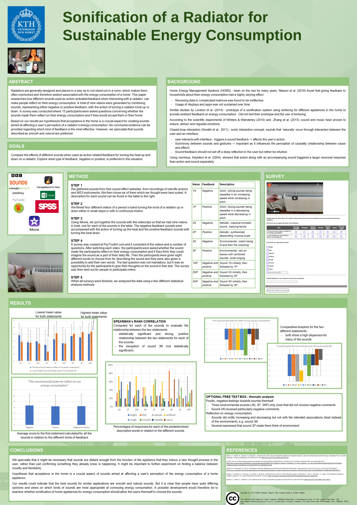

Sonification of a Radiator for Sustainable Energy Consumption
Collaborators: Solbritt Gateman, Haris Vidimlic, Jiangyue Han
Duration: September - October, 2021
We explored whether sonification of a radiator had the potential to generate a more sustainable energy consumption. This was researched by applying nine different sounds, both recorded and generated, to a video of a radiator knob being turned up and down. The sounds, used as action-activated feedback, were created trying to stimulate either positive or negative feedback.
A perceptual user test was distributed online where the participants were presented with the different videos and consequent likert statements concerning their sentiments towards the sound and whether it made them reflect on their energy consumption.
My role in the project was to gather and record some of the sounds and to create the online survey. Furthermore, I performed statistical data analysis consisting of Spearman's rank correlation, among others. This was done with the use of Microsoft Excel and IBM SPSS Statistics.